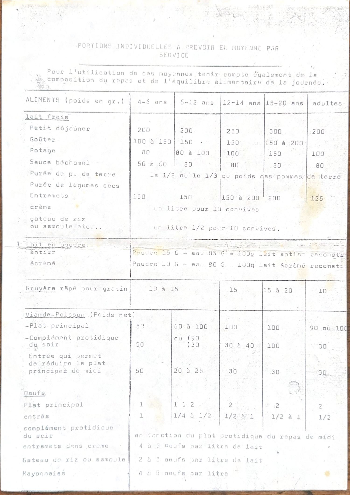
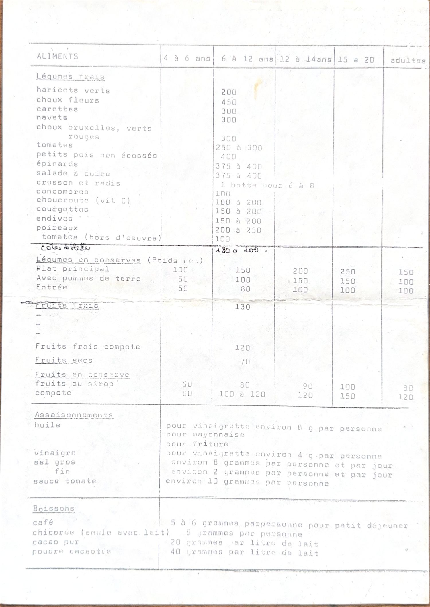
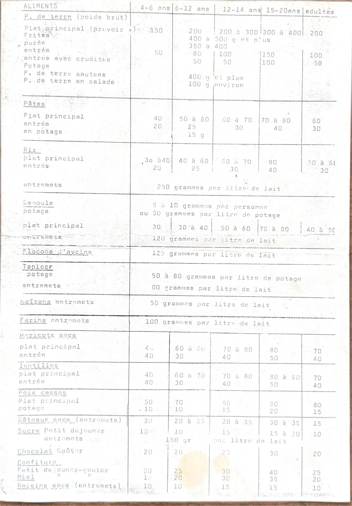
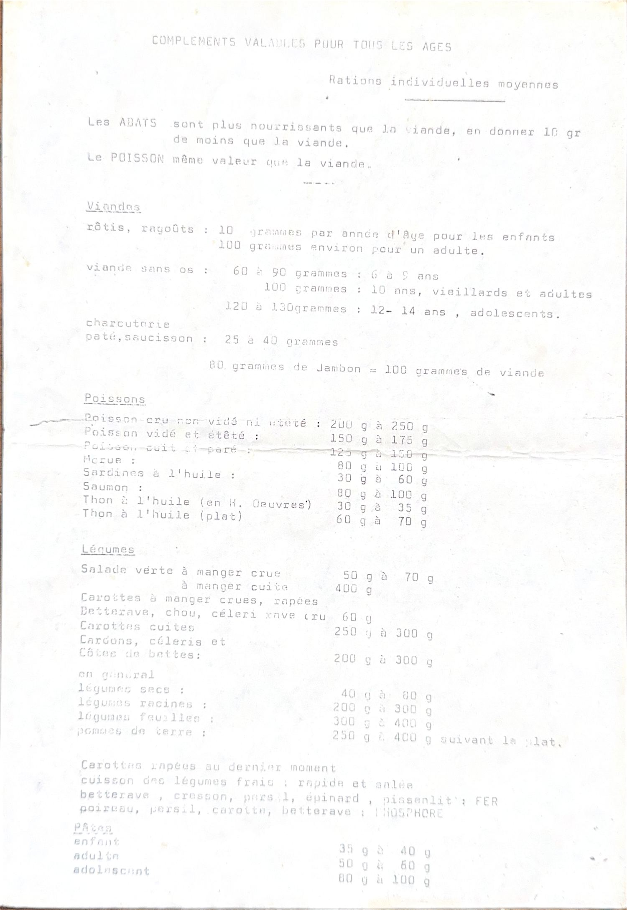
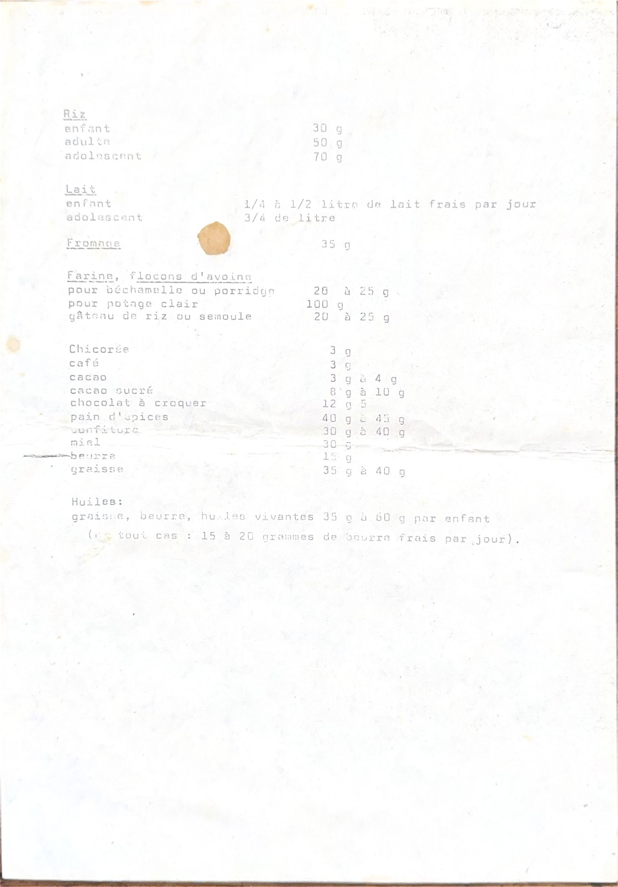

Comment lire ces tableaux : ce sont des portions individuelles moyennes, en grammes, à prévoir par service. Tenez compte aussi de la composition du repas et de l'équilibre de la journée. Sur téléphone, faites glisser les tableaux vers la gauche pour voir toutes les tranches d'âge.
Protides Viande, poisson et œufs
Poids net, par personne et par service.
| Aliment | 4-6 ans | 6-12 ans | 12-14 ans | 15-20 ans | Adultes |
|---|---|---|---|---|---|
| Viande ou poisson, plat principal | 50 | 60 à 100 | 100 | 100 | 90 à 100 |
| Entrée qui allège le plat de midi | 50 | 20 à 25 | 30 | 30 | 30 |
| Œufs, plat principal | 1 | 1 à 2 | 2 | 2 | 2 |
| Œufs, entrée | 1 | ¼ à ½ | ½ à 1 | ½ à 1 | ½ |
| Gruyère râpé pour gratin | 10 à 15 | — | 15 | 15 à 20 | 10 |
- 🥘 Les abats nourrissent davantage que la viande : comptez 10 g de moins.
- 🐟 Le poisson a la même valeur que la viande.
- 🍖 80 g de jambon = 100 g de viande.
- 🥓 Charcuterie, pâté, saucisson : 25 à 40 g.
- 🍳 Œufs en préparation : 4 à 5 par litre de lait pour les entremets à la crème et la mayonnaise, 2 à 3 par litre pour un gâteau de riz ou de semoule.
Poisson Selon la préparation
| Préparation | Par personne |
|---|---|
| Poisson cru, non vidé ni étêté | 200 à 250 g |
| Poisson vidé et étêté | 150 à 175 g |
| Morue | 80 à 100 g |
| Saumon | 80 à 100 g |
| Sardines à l'huile | 30 à 60 g |
| Thon à l'huile, en hors-d'œuvre | 30 à 35 g |
| Thon à l'huile, en plat | 60 à 70 g |
Féculents Pommes de terre, pâtes, riz
| Aliment | 4-6 ans | 6-12 ans | 12-14 ans | 15-20 ans | Adultes |
|---|---|---|---|---|---|
| Pommes de terre, plat principal | 150 | 200 | 200 à 300 | 300 à 400 | 200 |
| Pommes de terre, entrée | 50 | 80 | 100 | 150 | 100 |
| Pâtes, plat principal | 40 | 50 à 60 | 60 à 70 | 70 à 80 | 60 |
| Pâtes, entrée | 20 | 25 | 30 | 40 | 30 |
| Riz, plat principal | 30 à 40 | 40 à 60 | 60 à 70 | 80 | 50 à 60 |
| Riz, entrée | 20 | 25 | 30 | 40 | 30 |
| Semoule, plat principal | 30 | 30 à 40 | 50 à 60 | 70 à 80 | 40 à 50 |
| Haricots secs, plat principal | 40 | 60 à 80 | 70 à 80 | 80 | 70 |
| Lentilles, plat principal | 40 | 60 à 70 | 70 à 80 | 80 à 90 | 70 |
| Pois cassés, plat principal | 50 | 70 | 80 | 90 | 80 |
- 🍟 Frites : 400 à 500 g et plus. Purée : 350 à 400 g. Sautées : 400 g et plus. En salade : environ 100 g.
- 🥣 Pâtes en potage : 15 g. Semoule en potage : 5 à 10 g par personne, ou 50 g par litre de potage. Tapioca : 50 à 80 g par litre de potage.
Lait Lait et entremets
| Lait frais | 4-6 ans | 6-12 ans | 12-14 ans | 15-20 ans | Adultes |
|---|---|---|---|---|---|
| Petit déjeuner | 200 | 200 | 250 | 300 | 200 |
| Goûter | 100 à 150 | 150 | 150 | 150 à 200 | — |
| Potage | 80 | 80 à 100 | 100 | 150 | 100 |
| Sauce béchamel | 50 à 60 | 80 | 80 | 80 | 80 |
| Entremets | 150 | 150 | 150 à 200 | 200 | 125 |
- 🥛 Crème : un litre pour 10 convives. Gâteau de riz ou de semoule : un litre et demi pour 10 convives.
- 🧂 Par litre de lait : 250 g de riz, 120 g de semoule, 125 g de flocons d'avoine, 100 g de farine, 80 g de tapioca, 50 g de Maïzena, 150 g de sucre.
- 🥄 Lait en poudre reconstitué : entier, 15 g de poudre + 85 g d'eau ; écrémé, 10 g + 90 g d'eau — pour 100 g de lait.
- 🧀 Fromage : 35 g par personne.
- 🥔 Purée de pommes de terre ou de légumes secs : comptez la moitié ou le tiers du poids des pommes de terre en lait.
Légumes Légumes frais
Poids brut indicatif, par personne.
| Légume | Par personne |
|---|---|
| Choux-fleurs | 450 g |
| Petits pois non écossés | 400 g |
| Épinards | 375 à 400 g |
| Salade à cuire | 375 à 400 g |
| Carottes, navets, choux | 300 g |
| Tomates | 250 à 300 g |
| Poireaux | 200 à 250 g |
| Haricots verts | 200 g |
| Choucroute | 180 à 200 g |
| Courgettes, endives | 150 à 200 g |
| Concombres, tomates en hors-d'œuvre | 100 g |
| Cresson et radis | 1 botte pour 6 à 8 personnes |
| Salade verte crue | 50 à 70 g |
| Crudités râpées (carotte, betterave, céleri) | 60 g |
| Légumes secs | 40 à 80 g |
| Légumes en conserve | 4-6 ans | 6-12 ans | 12-14 ans | 15-20 ans | Adultes |
|---|---|---|---|---|---|
| Plat principal | 100 | 150 | 200 | 250 | 150 |
| Avec pommes de terre | 50 | 100 | 150 | 150 | 100 |
| Entrée | 50 | 80 | 100 | 100 | 100 |
- 🥕 Râpez les carottes au dernier moment.
- ♨️ Cuisson des légumes frais : rapide et salée.
- 🩸 Riches en fer : betterave, cresson, persil, épinard, pissenlit.
- 🦴 Riches en phosphore : poireau, persil, carotte, betterave.
Fruits Fruits frais et en conserve
| Aliment | 4-6 ans | 6-12 ans | 12-14 ans | 15-20 ans | Adultes |
|---|---|---|---|---|---|
| Fruits frais | 130 g par personne | ||||
| Fruits frais pour compote | 120 g par personne | ||||
| Fruits secs | 70 g par personne | ||||
| Fruits au sirop | 60 | 80 | 90 | 100 | 80 |
| Compote en conserve | 60 | 100 à 120 | 120 | 150 | 120 |
| Raisins secs, en entremets | 10 | 10 | 15 | 15 | 10 |
Matin Petit déjeuner et goûter
| Aliment | 4-6 ans | 6-12 ans | 12-14 ans | 15-20 ans | Adultes |
|---|---|---|---|---|---|
| Sucre | 10 | 10 | 15 | 15 à 20 | 10 |
| Confiture | 20 | 25 | 30 | 40 | 25 |
| Miel | 10 | 20 | 30 | 35 | 20 |
| Chocolat au goûter | 20 | 20 | 25 | 30 | 20 |
| Gâteaux secs, en entremets | 20 | 20 à 35 | 20 à 35 | 30 à 35 | 15 |
- ☕ Café : 5 à 6 g par personne au petit déjeuner. Chicorée seule avec du lait : 5 g.
- 🍫 Cacao pur : 20 g par litre de lait. Poudre cacaotée : 40 g par litre de lait.
- 🥖 Pain d'épices : 40 à 45 g.
Base Assaisonnements et matières grasses
- 🫒 Huile pour vinaigrette : environ 8 g par personne.
- 🍶 Vinaigre pour vinaigrette : environ 4 g par personne.
- 🧂 Sel : environ 8 g de gros sel et 2 g de sel fin par personne et par jour.
- 🍅 Sauce tomate : environ 10 g par personne.
- 🧈 Beurre : 15 g. Graisse : 35 à 40 g. Pour un enfant, 35 à 60 g de matières grasses par jour, dont 15 à 20 g de beurre frais.
- 🌾 Farine ou flocons d'avoine : 20 à 25 g pour une béchamel ou un porridge, 100 g pour un potage clair.
📷 Voir le document original (5 pages)




